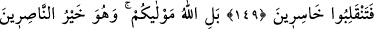
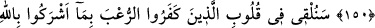
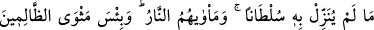
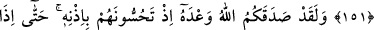
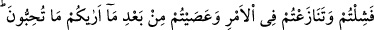
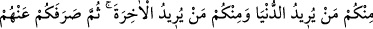
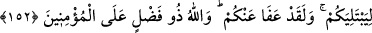

EN İYİ DOST ALLAH’TIR
149. Ey îman edenler! Eğer kâfirlere uyarsanız, gerisin geriye (eski dininize)
döndürürler de, hüsrana uğrayanların durumuna düşersiniz.
150. Oysa sizin mevlânız Allah’dır ve O, yardımcıların en hayırlısıdır.
151. Allah’ın, hakkında hiçbir delil indirmediği şeyleri O’na ortak koşmaları
sebebiyle, kâfirlerin kalplerine yakında korku salacağız. Gidecekleri yer de
cehennemdir. Zâlimlerin varacağı yer ne kötüdür!
152. Siz Allah’ın izni ile düşmanlarınızı öldürürken, Allah size olan vâdini yerine
getirmiştir. Nihâyet, öyle bir an geldi ki, Allah arzuladığınızı (galibiyeti) size
gösterdikten sonra zaafa düştünüz; (Peygamberin verdiği) emir konusunda
tartışmaya kalkıştınız ve âsî oldunuz. Dünyayı isteyeniniz de vardı, âhireti
isteyeniniz de vardı. Sonra Allah, denemek için sizi onlardan (onları mağlûb
etmekten) alıkoydu. Ve andolsun sizi bağışladı. Zâten Allah, mü’minlere karşı çok
lütufkârdır.
Bu âyet-i celîle, münâfıkların bozguna uğrayan mü’minlere: “Dininize ve
kardeşlerinize dönün. Muhammed, bir peygamber olsa idi, mağlûb olur; öldürülür mü
idi?” şeklindeki sözleri hakkında nâzil olmuştur. Cenâb-ı Mevlâ şöyle buyuruyor: “Ey
inananlar,
eğer
inkâr
edenlere”
-ki
bunlar
münâfıklardır.
Kâfir
diye
vasıflandırılmalarının sebebi, inananların, onlardan daha fazla nefret edip onlara itâat
etmekten daha uzak durmalarını sağlamaktır- “İtâat ederseniz sizi ökçeniz üzerine geri
çevirirler,” kendi dinlerine sokarlar. Allah Teâlâ, mü’minleri eski hallerine çevirme
işini münâfıklara izâfe ediyor; çünkü münâfıklar mü’minleri geri dönmeye çağırarak,
buna sebep olmuş oluyorlar.